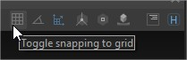
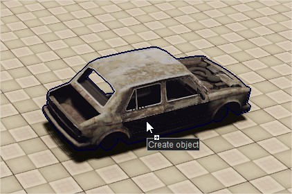

Integrated Documentation
Integrated Documentation is a collection of practices and systems available to you that aim to document the tools and guide the user in his discovery process as much as possible. This makes tools much easier to use without having to open the actual documentation page. The final step is to make sure the full documentation page is linked to the tool through the help system.
We'll go into the various systems available for this.
Tooltips
Tooltips are the most basic and the most practical form of integrated documentation.
They are text overlays that appear when the mouse hovers over an interactive UI element. Use them liberally, in fact, our User Experience Guidelines dictate that every interactable element that supports tooltip must have one. The downside is that a tooltip should not be too long and therefore can sometimes lack detail or be ambiguous.

Drag-Tooltip
The drag-tooltip is a custom Sandbox system that allows displaying a tooltip that follows the mouse during a drag operation.

The purpose of this tooltip is to inform the user what will be triggered through the drag action, and in combination to "cannot drag" cursor changes, make it much easier to discover drag-drop functionality than guess-work.
The drag-tooltip is accessible from CDragDropData used in our drag-drop system. Simply invoke CDragDropData::ShowDragText in a drop handler to activate it.
Please use this for every drag action.
F1 - Go to documentation
The F1 key (default shortcut) or the help menus will redirect the user to the relevant documentation page by opening it in the default browser. This system is extremely valuable and should be added to every new tool. Note that this system does not need to be restricted to a tool, and every Qt Widget can specify its own documentation page if necessary.
Here is how to connect a widget to its documentation link:
- If the widget is a CEditor or inherits from CEditor:
- Please note that CEditor also looks up the documentation link from a JSON file for most editors built into CryEngine. In this case, only the JSON file needs to be edited.
- Please note that CEditor also looks up the documentation link from a JSON file for most editors built into CryEngine. In this case, only the JSON file needs to be edited.
//This virtual method will be called by CEditor if the help command is invoked
void OnHelp() final
{
QDesktopServices::openUrl("www.example.com");
}- Any QWidget: must implement handling of the custom SandboxEvent
void ExampleWidget::customEvent(QEvent* event)
{
if (event->type() == SandboxEvent::Command)
{
CommandEvent* commandEvent = static_cast<CommandEvent*>(event);
const string& command = commandEvent->GetCommand();
if (command == "general.help")
{
QDesktopServices::openUrl("www.example.com");
}
}
else
{
QWidget::customEvent(event);
}
}